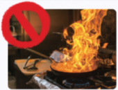
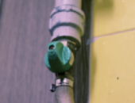
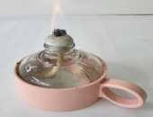
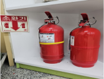

1번
다음은 지구 자전축의 기울기에 따른 태양의 남중 고도를 비교하는 실험입니다. 이 실험을 설계할 때, 서로 다르게 해야 할 조건은?
개요
장면
장소
담고자 하는 내용
자막
가
부엌

가스 불 위에 음식물을 올려놓고 자리를 비우면 안 된다.
나
부엌

가스레인지 중간 밸브는 쓰기 편하게 항상 열어놓는다.
다
과학실

알코올램프의 불을 입으로 불어 끈다.
라
과학실

과학실에 소화기를 배치한다.